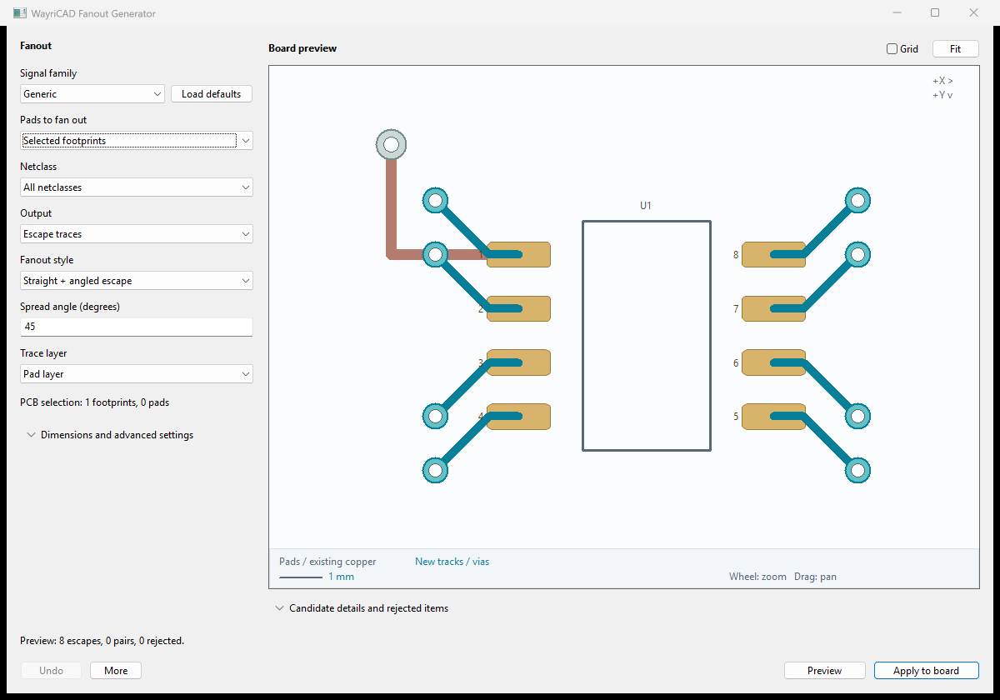

The numbered cues match the four guarded stages in the installed plugin.

Creates conservative radial, BGA/LGA-grid, or perimeter escape tracks from SMD pads.
| Stage | Action | PCB effect |
|---|---|---|
| 1. Configure | Choose footprint, pattern, dimensions, layer, and optional vias. | None |
| 2. Window preview | Inspect the geometry canvas and accepted rows. | None |
| 3. PCB preview | Show the reviewed geometry on the PCB and inspect it against existing copper. | Temporary until cleared or closed |
| 4. Commit | Commit, run DRC, and save. | Geometry remains |
Undo Last Commit removes every track and via from one fanout commit. Redo Last Commit restores that complete operation. KiCad 10 does not expose native BOARD_COMMIT to Python, so modeless commits use the plugin's bulk Undo/Redo controls.